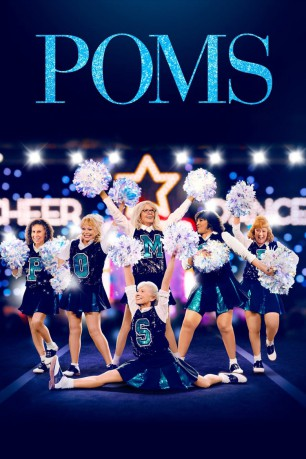
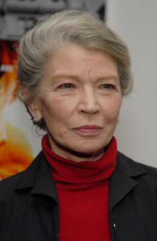
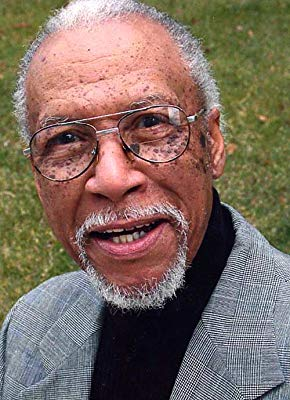

#11496 Dancing Queens
Alternativ: Poms (Englischer Titel)
 
 IMDB-Wertung: 5.3 / 10
IMDB-Wertung: 5.3 / 10  Tomatometer: 35
Tomatometer: 35  Metascore: 36
Metascore: 36 
Etwas außerhalb von Phoenix lebt eine Rentner-Kommune in der Altersresidenz Sun Springs in einem beschaulichen, von Palmbäumen gesäumten Vorort – perfekt, um eine ruhige Kugel zu schieben und einen entspannten Lebensabend zu verbringen. Als Martha (Diane Keaton) jedoch nach Sun Springs kommt, ist Schluss mit dem vermeintlich eintönigen Rentnerleben. Gemeinsam mit ihren neuen, quietschvergnügten Mitbewohnerinnen Sheryl (Jacki Weaver), Olive (Pam Grier) und Alice (Rhea Perlman) erkennt sie schnell, dass ihr Alter keineswegs bedeutet, dass sie keinen Spaß mehr haben kann. Die vier Damen, die vor Lebensfreude geradezu sprühen, denken noch gar nicht daran, mit ihrem Leben abzuschließen. Sie wollen es noch einmal wissen und machen so ziemlich das letzte, was man von ihnen erwarten würde – und gründen die vielleicht schrulligste, liebenswerteste und älteste Cheerleader-Truppe, die man sich nur vorstellen kann.
WEBHDRIP MIC schlechte Mic, nervige Werbung
Jahr: 2019
Dauer: 90 Minuten
FSK: 0
Land: England Studio: UFATonspuren:
Untertitel:
Auflösung: 1080p (1920x1080) Größe: 2918 MB
Genre: Drama, Komödie
Regisseur: Zara Hayes
Drehbuch: Shane Atkinson, Shane Atkinson, Zara Hayes
Soundtrack: Deborah Lurie
Darsteller:
 Diane Keaton als Martha
Diane Keaton als Martha Jacki Weaver als Sheryl
Jacki Weaver als Sheryl Celia Weston als Vicki
Celia Weston als Vicki- Alisha Boe als Chloe
 Charlie Tahan als Ben
Charlie Tahan als Ben- Rhea Perlman als Alice
-  Phyllis Somerville als Helen
 Pam Grier als Olive
Pam Grier als Olive Patricia French als Phyllis
Patricia French als Phyllis- Ginny MacColl als Evelyn
 Carol Sutton als Ruby
Carol Sutton als Ruby Bruce McGill als Chief Carl
Bruce McGill als Chief Carl- Alexandra Ficken als Paige
 David Maldonado als Tom
David Maldonado als Tom- Karen Beyer als Barbara
- Sharon Blackwood als Gayle
 Afemo Omilami als David
Afemo Omilami als David Frank Hoyt Taylor als Paul
Frank Hoyt Taylor als Paul- Suehyla El-Attar als Shopper
- Jessica Roth als Susan
- Angela Mitchell Kronenberg als Judge
- Annie Jacob als Cheerleader
- Jacqueline Clay Chester als Committee Member
- John Atwood als Tim Nichols
 Robert Larriviere als Volunteer
Robert Larriviere als Volunteer-  Leon Lamar als Widower
- Dorothy Steel als Dorris
 Charles Green als Announcer
Charles Green als Announcer- Kathi Binkley als Cheerleading Judge (uncredited)
- Austin Blackburn als H.S. Student (uncredited)
- Victoria Blade als Bargain Hunter (uncredited)
- Chuck Clark als Golf Cart Passenger (uncredited)
- John Paul Kakos als Tyler Poe (uncredited)
- Deeivya Meir als Viral Fan (uncredited)
- Henardo Rodriguez als High School Student (uncredited)
- Wesley Williams als Man on Golf Course (uncredited)
- Bobby Akers als Cheerleading Competition Attendee
- Joshua Allen als H.S. Student / First Row Audience (uncredited)
- Maxwell Highsmith als Bowling Alley Patron (uncredited)
- Jasmine Holloman als Mascot (uncredited)
- Ken Melde als Alice's Husband (uncredited)
- Mike O'Loughlin als Gate Guard (uncredited)
- Kevin Petruski Jr. als Cheerleading Fan (uncredited)
- Alejandra Stack als Cheerleader (uncredited)
Datei: X:\2019(A-F)\Dancing Queens (2019, FSK0, 1920x1080).mkv seit 16.07.2019
Festplatte: HD 2018(G-Z)-2019(A-Z)
 Es gibt insgesamt 60 Filme in der Gruppe '2019(A-F)'
Es gibt insgesamt 60 Filme in der Gruppe '2019(A-F)'